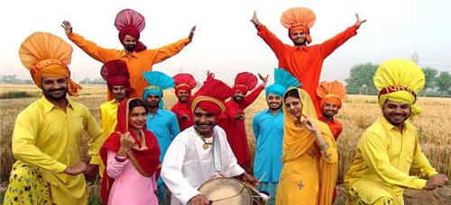

Art and Culture of Patiala
Patiala is a wonderful blend of religious and cultural life. It has an extremely rich and colorful Indian culture. Patiala has remained in the forefront in education field. From beautifully made monuments and forts to old Palaces of Indian maharajas to rich cuisines, to satisfy your tasting buds. The language which is mostly spoken in Patiala is Punjabi. Hindi and English are also spoken but only for official purpose.
With the passage of time, Patiala has a developed a culture of its own, known as, “Patialavi”culture. Patiala has also witnessed evolution of various styles of architecture. The roots of the architecture is inspired by the Rajput Style, its beauty, elegance. However, the design has been moulded according to the local taste.
Indian Classical music and Local Bhangra dance was encouraged in Patiala. Infact“The Patiala Gharana” a kind of Indian Classical music was originated here. Patiala gharana gave witnessed many talented musicians but one of the renowned musician of them was Ustad Ali Bux. Later on his sons, Ustad Bade Ghulam Ali Khan and Ustad Akhtar Hussain Khan, became famous worldwide and brought glory to the Patiala Gharana.